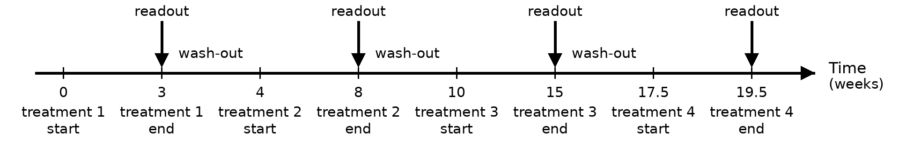
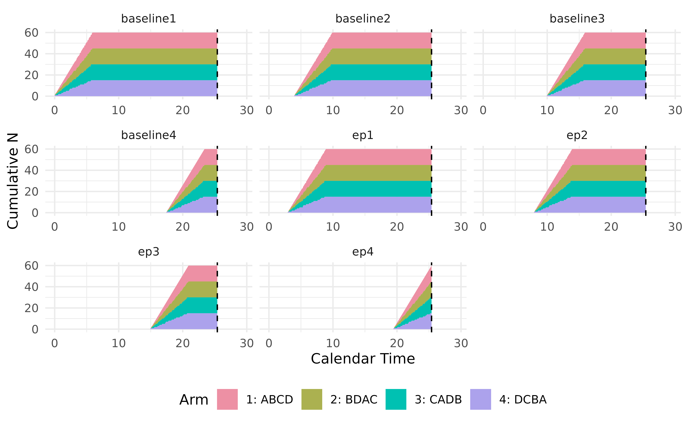

The TrialSimulator package can handle three types of
crossover design. This vignette focuses on a trial for studies on
symptom reduction, e.g., for chronic conditions with short-lived and
reversible treatment effects. A crossover trial is a longitudinal design
where participants receive multiple treatments sequentially, acting as
their own control if the carry-over effect can be minimized by the use
of untreated wash-out period. We can use the similar idea in the vignette
of longitudinal endpoints to implement simulation, where endpoints
at the end of each treatment in the pre-determined and randomized
sequence are defined in function endpoint() with its
argument readout is set.
Simulation Settings
In simulation, we assume a balanced Latin square design of four arms
| Sequence | Treatment 1 | Treatment 2 | Treatment 3 | Treatment 4 |
|---|---|---|---|---|
| ABCD | A | B | C | D |
| BDAC | B | D | A | C |
| CADB | C | A | D | B |
| DCBA | D | C | B | A |
- duration of wash-out periods between treatments are 1, 2, 2.5 months, respectively.
- duration of treatments in sequence are 3, 4, 5, 2 months, respectively.
The figure shows the timeline of the trial

Readout time of a trial under a balanced design.
Additional settings are
- enroll 10 patients per week for 6 weeks. In total 60 patients are randomized into four arms evenly.
- no dropout.
- analyze the data when planned treatment for all patients are completed, i.e., approximately 25.5 weeks.
- statistical analysis is not implemented in this example.
Define Endpoints in Four Arms
We collect baselines at the beginning of a new treatment (i.e., at the end of wash-out period), and endpoint value when the treatment is completed. To do so, we define four baseline variables and four endpoint variables as below
all_endpoint_name <- c('baseline1', 'ep1',
'baseline2', 'ep2',
'baseline3', 'ep3',
'baseline4', 'ep4')
readouts <- c(baseline1 = 0, ep1 = 3,
baseline2 = 4, ep2 = 8,
baseline3 = 10, ep3 = 15,
baseline4 = 17.5, ep4 = 19.5)
eps <- endpoint(
name = all_endpoint_name,
type = rep('non-tte', 8),
readout = readouts,
generator = rng, means = rep(c(0, .5), 4)
)
arm1 <- arm(name = 'ABCD')
arm1$add_endpoints(eps)
arm1Here, a custom random number generator, rng, is provided
by users to describe how data of the treatment sequence
ABCD is generated. For the purpose of illustration, we
simply assume an independent structure between baselines and endpoints
(vcov = diag(1, 8)). Users can adopt much complex models to
simulate carry-over effect or other mechanism. Note that
rng uses its default value for vcov, and a
custom value for its argument means. We will use different
value for means when defining other arms.
rng <- function(n, means, vcov = diag(1, 8)){
ret <- as.data.frame(rmvnorm(n, mean = means, sigma = vcov))
colnames(ret) <- c('baseline1', 'ep1',
'baseline2', 'ep2',
'baseline3', 'ep3',
'baseline4', 'ep4')
ret
}Adopting TrialSimulator in development of simulation
enjoys the convenience of writing similar codes with good readability.
To see that, here is how we define the other three arms
eps <- endpoint(
name = all_endpoint_name,
type = rep('non-tte', 8),
readout = readouts,
generator = rng, means = rep(c(0, .6), 4) # diff means
)
arm2 <- arm(name = 'BDAC')
arm2$add_endpoints(eps)
eps <- endpoint(
name = all_endpoint_name,
type = rep('non-tte', 8),
readout = readouts,
generator = rng, means = rep(c(0, .2), 4), vcov = diag(1.2, 8) # diff means/vcov
)
arm3 <- arm(name = 'CADB')
arm3$add_endpoints(eps)
eps <- endpoint(
name = all_endpoint_name,
type = rep('non-tte', 8),
readout = readouts,
generator = rng, means = rep(c(0, 0), 4) # diff means
)
arm4 <- arm(name = 'DCBA')
arm4$add_endpoints(eps)Define a Trial
As planned, we recruit 10 patients per week until 60 patients are
randomized. A built-in enroller function StaggeredRecruiter
is used to enroll patients. Note that the last patient would be
randomized at the 6th week and complete all treatments at week 25.5. We
can set duration = 25.5 in function trial(),
however, we set it to a greater number (28) so that we can illustrate
some nice features of TrialSimulator later.
accrual_rate <- data.frame(end_time = c(6, Inf),
piecewise_rate = c(10, 10))
trial <- trial(name = 'crossover-trial',
n_patients = 60,
duration = 28,
enroller = StaggeredRecruiter, accrual_rate = accrual_rate,
silent = TRUE)
trial$add_arms(sample_ratio = c(1, 1, 1, 1), arm1, arm2, arm3, arm4)
trial
#> ⚕⚕ Trial Name: crossover-trial
#> ⚕⚕ Description: crossover-trial
#> ⚕⚕ Number of Arms: 4
#> ⚕⚕ Registered Arms: ABCD, BDAC, CADB, DCBA
#> ⚕⚕ Sample Ratio: 1, 1, 1, 1
#> ⚕⚕ Number of Patients: 60
#> ⚕⚕ Planned Duration: 28
#> ⚕⚕ Regime: not set
#> ⚕⚕ Random Seed: 973100785Define Milestone and Action
Next, we define the only milestone of the trial where data is analyzed. In this example, we have three different ways to specify the triggering condition of the milestone equivalently, using the three key functions of the condition system.
The first one uses calendarTime() where we set the
25.5th weeks as the end of trial. Note that the simulate will stop at
that time even if the duration of trial is set to be 28 weeks.
final <- milestone(name = 'final',
when = calendarTime(time = 25.5),
action = action)We can also define the milestone time by the number of readouts of
ep4, i.e., endpoint when the last treatment is completed.
In the code below, we trigger the milestone when all 60 patients have
their ep4 readouts.
final <- milestone(name = 'final',
when = eventNumber(endpoint = 'ep4', n = 60),
action = action)Equivalently, the milestone can be define as the time point when all 60 patients are enrolled and have been treated for at least 19.5 weeks.
final <- milestone(name = 'final',
when = enrollment(n = 60, min_treatment_duration = 19.5),
action = action)The action function, action(), is an essential component
when defining a milestone. It takes the trial object as its
first argument, and any optional arguments follow. Statistical analysis
can be carried out in the function using data locked for milestone. The
data cut can be requested by calling the member function
get_locked_data(milestone_name), followed by user-defined
analysis, decisions, and actions. As the statistical methods for
crossover design is out of the scope of the package, we omit it from
implementation.
action <- function(trial){
locked_data <- trial$get_locked_data('final')
## omit statistical analysis
trial$save(value = 'anything', name = 'result')
## save more results for summary of simulation
# trial$save(value = ..., name = ...)
}Execute a Trial
Now we have all pieces to complete the implementation of simulation. Let’s register the milestone with a listener, so that it can be monitored automatically when a controller is running a trial.
listener <- listener()
listener$add_milestones(final)
#> A milestone <final> is registered.
controller <- controller(trial, listener)
controller$run(n = 1, plot_event = TRUE)
#> Condition of milestone <final> is being checked.
#> Data is locked at time = 25.4 for milestone <final>.
#> Locked data can be accessed in Trial$get_locked_data('final').
#> Number of events at lock time:
#> patient baseline1 ep1 baseline2 ep2 baseline3 ep3 baseline4 ep4
#> 1 60 60 60 60 60 60 60 60 60
#> 
Simulation results are saved and can be retrieved by calling the
member function get_output() of a controller. In this
example, we can see the column result we saved manually in
action function, along with many other columns saved by the controller
automatically. To know more about the naming convention of auto saved
columns, please refer to vignette
of action function. To run more replicates of simulation, simply set
n to a greater integer in
controller$run().
output <- controller$get_output()
output %>%
kable(escape = FALSE) %>%
kable_styling(bootstrap_options = "striped",
full_width = FALSE,
position = "left") %>%
scroll_box(width = "100%")| trial | seed | milestone_time_<final> | n_events_<final>_<patient_id> | n_events_<final>_<baseline1> | n_events_<final>_<ep1> | n_events_<final>_<baseline2> | n_events_<final>_<ep2> | n_events_<final>_<baseline3> | n_events_<final>_<ep3> | n_events_<final>_<baseline4> | n_events_<final>_<ep4> | result | error_message |
|---|---|---|---|---|---|---|---|---|---|---|---|---|---|
| crossover-trial | 973100785 | 25.4 | 60 | 60 | 60 | 60 | 60 | 60 | 60 | 60 | 60 | anything |